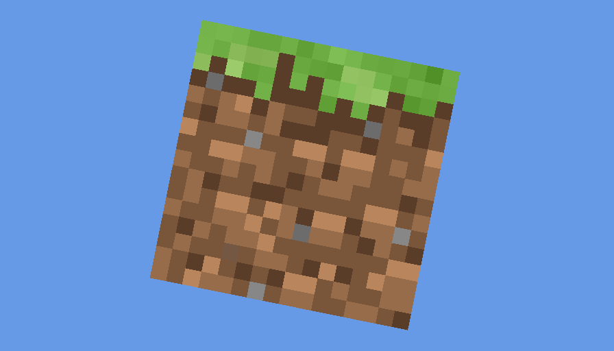

纹理
在绘制出纹理前，我们先把三角形变成~~四角形~~四边形。
我们将把这个四边形看做是两个三角形而不是GL_QUADS。
我们将使用Mesh来处理。这样便无需让渲染器来处理。
我们还需要修改着色器，以适应新的更改。
#version 110
attribute vec2 vert;
attribute vec3 in_color;
// 我们新添了2个成员。
attribute vec2 in_texCoord;
varying vec3 out_color;
varying vec2 out_texCoord;
uniform mat4 orthoMatrix;
void main()
{
gl_Position = orthoMatrix * vec4(vert, 0.0, 1.0);
out_color = in_color;
out_texCoord = in_texCoord;
}
#version 110
varying vec3 out_color;
varying vec2 out_texCoord;
// 纹理采样器
uniform sampler2D textureSampler;
void main()
{
// 我们将生成2D纹理并与颜色混合。
// 这就是为什么在固定管线中调用glColor*(1, 1, 1)的原因。
// 如果不调用这个函数，那么颜色全部都会乘0，结果为黑色。
gl_FragColor = texture2D(textureSampler, out_texCoord) * vec4(out_color, 1.0);
}
我们还使用了Textures类，用于快速创建纹理。
现在我们可以修改渲染器了。
把之前的vbo代码全部删除，换上全新的Mesh。
mesh = Mesh.builder()
.program(program)
.vertices(vertices)
.vertIdx("vert")
.vertSize(2)
.colors(colors)
.colorIdx("in_color")
.texCoords(texCoords)
.texIdx("in_texCoord")
// 由于GLUtils 0.3.0中的bug，我们需要手动设置texSize为2.等0.4.0吧
.texSize(2)
.texture(Textures.loadAWT(GameRenderer.class.getClassLoader(),
"grass_block.png",
GL_NEAREST))
.indices(indices)
.build();
你可以看到，我们使用了AWT来读取图片。这是因为stb是本地库，它无法获取与Classpath有关的东西，使我们只能用绝对路径。
我们使用了一个草方块作为纹理。
然后我们设置textureSampler为0：program.setUniform("textureSampler", 0)
接着把glDrawArrays替换为mesh.render()。
最后，我们在close里释放内存：mesh.close()。
启动后，我们会看到一个能动的草方块。
